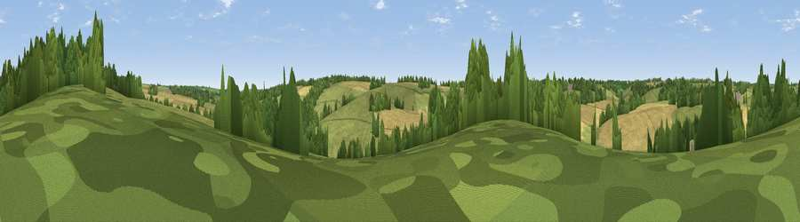

Viewpoint near Farmington
#44950 in England · top 96% of its area beats it · near FarmingtonWhere it is
The exact computed spot (SP 14825 15575). Click the marker for map links.
The view, rendered

A 360° render of this exact spot computed from the terrain model, tree cover and land cover — summer colours, afternoon light, calibrated against photographs of famous viewpoints. Real trees, hedges and buildings will differ in detail.
The panorama
Grey silhouette: terrain skyline in each direction (720 bearings, Earth curvature and refraction included). Dashed green: skyline with trees (+15 m) and buildings (+8 m) as obstacles. Blue strip: how far the ground is visible on each bearing.
Where the view opens
Wedge length = distance to the farthest visible ground on that bearing (vegetation-aware). Rings at 10, 25 and 50 km.
What fills the view
50% grassland · 34% cropland · 16% woodland
Angular shares of the visible panorama (visual magnitude), not map area. Landscape diversity 0.44 (0–1 Shannon).
Key numbers
More beautiful places nearby
The staircase of upgrades: each row has a higher view potential than everything closer. Driving times are estimates from straight-line distance, calibrated against real road routing — check an actual route before setting out.
| Place | Direction | Drive | Score |
|---|---|---|---|
| Viewpoint near Bourton-on-the-Water | NNE · 3 km | ~6 min | 47.5 |
| Viewpoint near Wyck Rissington | NE · 8 km | ~16 min | 58.7 |
| Viewpoint near Icomb | NE · 9 km | ~18 min | 63.9 |
| Roel Hill | NW · 14 km | ~25 min | 67.6 |
| Viewpoint near Charlton Abbots | NW · 16 km | ~28 min | 70.2 |
| Salter's Hill | NW · 17 km | ~29 min | 72.3 |
| Viewpoint near Prestbury | WNW · 18 km | ~31 min | 73.0 |
| Viewpoint near Cleeve Hill | WNW · 18 km | ~31 min | 74.9 |
51.83859, -1.78623 · source: screening · position refined by local search. Computed location — check access rights before visiting.